PHY-2105 • Full marks 40 • 2 hours • Q1–Q4 compulsory, then Q5 or Q6
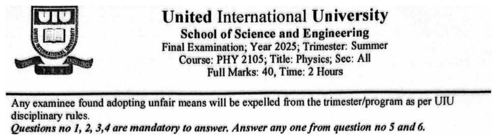
Each question is shown exactly as printed (cropped from the paper), followed by Given → 📐 Formula → Steps → Answer, with diagrams. Blue 🧭 Why? boxes explain directions; red boxes flag ambiguities in the paper.
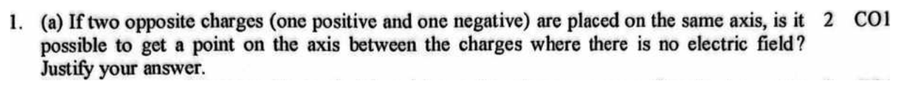
field of each charge: away from +, toward −
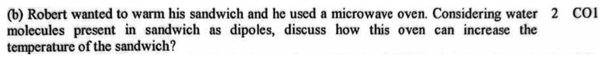
torque and energy of a dipole in a field
Step 1. A water molecule is a permanent dipole: its electrons crowd toward the oxygen, so the O side is negative and the H side positive (bond angle ~105°).
Step 2. The oven fills the food with an electric field that reverses direction about 2.45 billion times a second (it oscillates).
Step 3. Each time the field changes, it exerts a torque τ = pE sin θ that turns every water dipole toward the new field direction — so the molecules keep flipping back and forth.
Step 4. The rotating molecules jostle their neighbours and keep breaking and re-forming hydrogen bonds. That energy is shared out as random molecular motion — i.e. thermal energy — so the temperature rises.
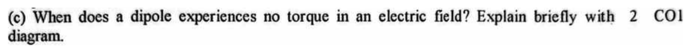
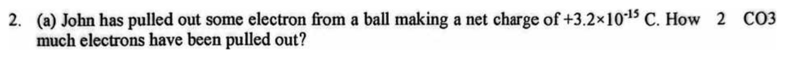
each electron removed leaves +e behind
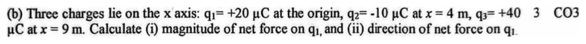
Coulomb's law — size of the force. Like charges repel, unlike attract.
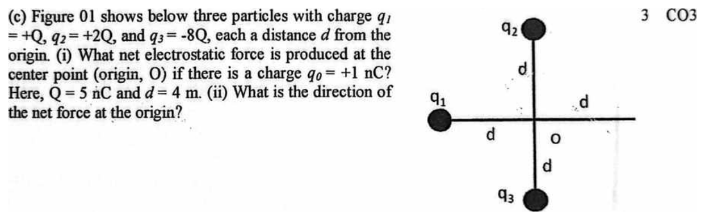
Coulomb's law — size of the force. Like charges repel, unlike attract.
Each force lies along an axis, so one component is the whole force and the other is zero:
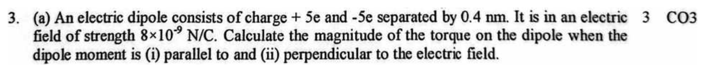
Step 1. (i) Parallel, θ = 0°:
Step 2. (ii) Perpendicular, θ = 90°:
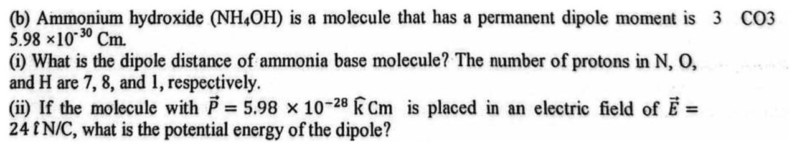
slide method: total charge Ne of one sign, separated by d
Step 1. (i)
Step 2. (ii) p is along k̂ and E along î, which are perpendicular:
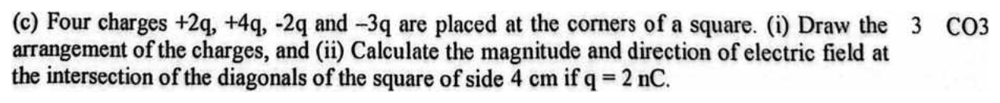
field of a point charge — away from +, toward −
corner to centre
Step 1. \(r = 0.04/\sqrt2 = 0.0283\) m, so one \(q\) at a corner gives
The same answer with x and y components (both diagonals are 45° from the horizontal, cos 45° = sin 45° = 0.707):
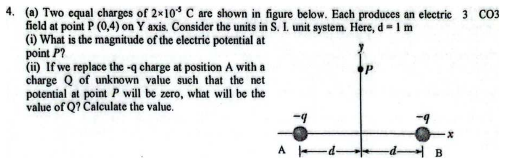
scalar sum
Step 1. Distance from each charge: \(r = \sqrt{1^2 + 4^2} = \sqrt{17} = 4.12\) m.
Step 2. (i)
Step 3. (ii) For V = 0 the new charge must cancel B's contribution. Both are at the same distance, so
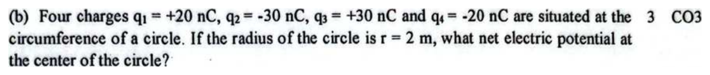
all at the same distance from the centre → add the charges
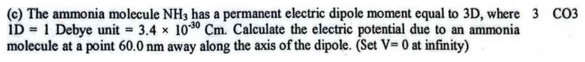
dipole potential far away
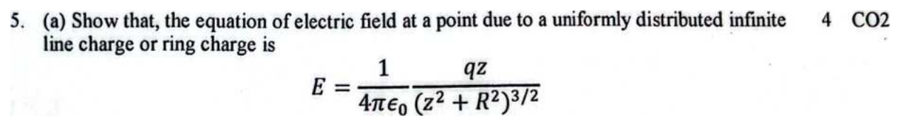
Same derivation as Final 261 Q4 (a).
The formula given is the field of a ring of radius R and charge q at a point P on its axis, a distance z from the centre.
Step 1. Split the ring into small elements of length \(ds\), each carrying \(dq = \lambda\,ds\) with \(\lambda = q/2\pi R\). Treat each as a point charge:
Step 2. Symmetry: the element directly opposite gives a \(d\vec E\) with the same axial part and an equal but opposite sideways part. So all the sideways (\(dE\sin\theta\)) parts cancel and only the axial parts \(dE\cos\theta\) survive, with
Step 3. Add up the axial parts around the whole ring (z and R are the same for every element):
Step 4. Since \(\lambda(2\pi R) = q\):
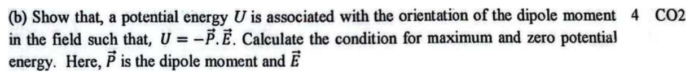
Same derivation as Final 261 Q4 (b).
Step 1. A dipole at angle θ to \(\vec E\) feels a torque that tries to decrease θ:
Step 2. Work done by the field as the dipole turns from \(\theta_0\) to θ:
Step 3. Potential energy change \(\Delta U = -W\). Choose the reference \(U = 0\) at \(\theta_0 = 90^\circ\) (\(\cos90^\circ = 0\)):
Step 4. Conditions:
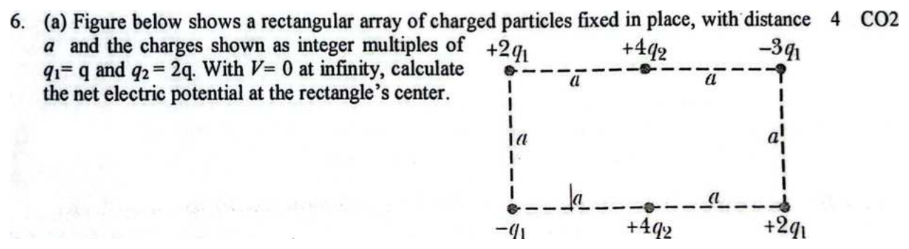
Step 1. Corners are all \(\sqrt{a^2 + (a/2)^2} = \tfrac{\sqrt5}{2}a\) from the centre, and their charges add to
Step 2. The two middle charges are \(a/2\) away:
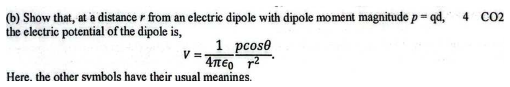
Same derivation as Final 261 Q5 (b).
Step 1. Superpose the potentials of \(+q\) and \(-q\), at distances \(r_{(+)}\) and \(r_{(-)}\) from P:
Step 2. Far away (\(r \gg d\)) the two lines to P are almost parallel. Then
Step 3. Substitute, and use \(p = qd\):